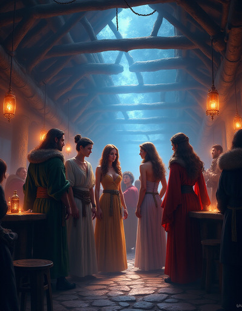
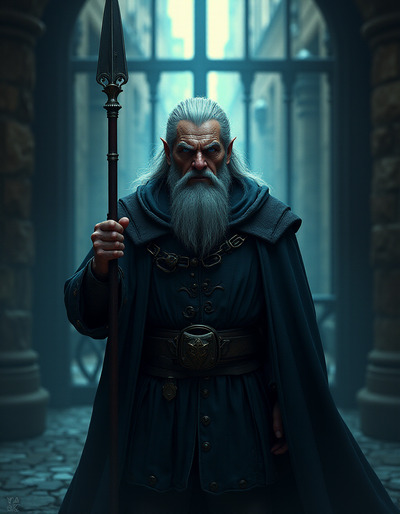
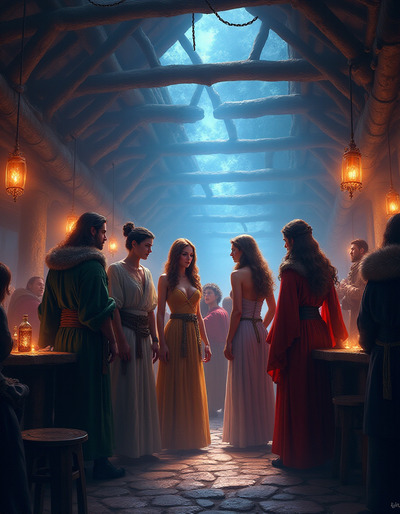
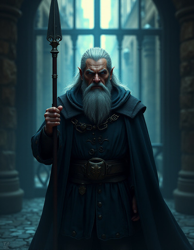

Social Challenges
Handling social and mental challenges has always been a bit awkward in
roleplaying games, with different groups having different views on how
they should be handled. Each model has different pros and cons and
may or may not appeal to any particular group.
There are four modular systems that can be used to handle social/mental
challenges and the group can choose which one they like best, they may
even use multiple systems, depending on the nature of the challenge.
All four systems can still be used with progress clocks
and complex challenges, though some may fit more organically into those
systems.
Social Challenges vs Social Combat
For something to be a social combat, the Hero must have social or
mental stakes. This generally means failure results in shame,
humiliation or a loss of social status or reputation.
A Hero trying to con their way past a guard isn’t going to suffer a
loss of self-image if the guard sees past their deception. This
would be a social challenge, but not social combat. Failure would
likely result is some sort of immediate physical challenge (escape or
fighting), but not any social or mental consequences. This social
challenge would be considered safe.
A noble at a gala of their peers trying to influence the king, is engaging
in social combat. Failure could lead to a decrease in standing among those
the noble cares about as well as could lead to crippling doubt. This
social combat would be considered
stressful, and could result in
Trauma
Social combat is more likely to be satisfactorily resolved with
Normal Rules or
Roleplay Determines Difficulty of Dice Roll
Social Challenges vs Mental Challenges
Whenever challenges don’t involve a physical component, things
get more abstract. Social challenges occur when the approach to overcome
he challenge is through talking and communication. Persuasion or deception
is the hallmark of the social challenge.
Mental challenges tend to be more about solving an intellectual problem. If
you have a solution and you’re trying to convince others to implement it, that
is a social challenge, but to figure out that solution is a mental problem.
Roleplaying games have had just as much trouble letting players play geniuses
as they have them play charismatic leaders.
Mental challenges are well suited to handling with
Dice Determines Difficulty of Roleplay. Hints can be given to
player based on how well their Hero did at trying to analyze the
challenge.
It should give the player more or less information depending on how well they
did, rather completely solving puzzles for the player. This may be the
more satisfying way of resolving this problem, making sure the Hero’s skill
impacts the challenge, but that the player’s skill is still relevant.
Normal Rules
A social/mental challenge is simply a challenge like any other, no reason
to overthink it. We don’t expect players to have the strength,
speed and stamina of their Heroes, so why do we expect them to have the
intelligence and charisma or those Heroes? If a player wants to play a
genius or charismatic cult leader, the resolution should allow the Hero to
use those skills, even if the player doesn’t have those skills.
State an Intent, form a Strategy, roll some dice and
end with a Narration. That will work perfectly fine, and seamlessly integrates
with the rest of the system.
Pros:
Cons:

Don’t Roll Dice
There are no rules used for social/mental challenges, and it is
all done as pure roleplay as if challenge were part of
Exploration.
In this case the group improvs the conversation or situation and
an outcome is largely a matter of GM discretion. Because of this,
there are few hard and fast rules.
Pros:
Cons:
Social/mental contests don’t cause Stress.
Resolution is essentially GM Fiat.
This causes social/mental Boons are not used in a mechanical way, which may
cause them to be shortchanged in many groups.
Hero Boons are not used,
so there is no natural way for a Hero’s social or mental prowess to impact
the resolution other than by GM Fiat.
Player social/mental skill is used in place of Hero social/mental skill.
Players can’t predict their chance of success and make informed decisions.
Doesn’t integrate with progress clocks or complex challenges particularly well.
Roleplay Determines Difficulty of Dice Roll
In this model the players roleplay out the social/mental until it’s time for a
resolution, at which point the dice are rolled with a Strategy and effectiveness informed by that roleplay with the final narration of that
outcome coming from the result of the die roll.
Pros:
Integrates both player and Hero skill.
Preserves the possibility for cool roleplay moments.
Integrates with the normal system well.

Cons:
The outcome may not flow from the roleplay in cases where the player and
Hero have vastly different social/mental skills.
More complicated/time-consuming.
Doesn’t work so well with mental challenges.
Dice Determines Difficulty of Roleplay
At the beginning of the challenge, it proceeds normally, with the player
articulating and intent and Strategy and rolling dice. Instead of proceeding
to narration, roleplay starts.
The result of the die roll changes the world. Critical successes indicate a
guard that is credulous and naive, while a failure indicates a guard that
does everything exactly by procedure with no deviation.
For more established NPCs it might reveal some small detail that the Hero
can exploit or impact their mood. Perhaps it’s revealed that the NPC is very
bureaucratic, allowing the Hero to deploy specific arguments to hammer on that,
or that they don’t care about their minimum wage security guard job that much.
Pros:
Integrates both player and Hero skill.
Preserves the possibility for cool roleplay moments.
Can work well with certain kinds of mental challenges, by revealing more hints depending on the roll.
Cons:
Might still become a GM Fiat resolution.
Requires the most work from both GM and player.
Integration with progress clocks/complex challenges is clunky.
Social Challenges¶
Handling social and mental challenges has always been a bit awkward in roleplaying games, with different groups having different views on how they should be handled. Each model has different pros and cons and may or may not appeal to any particular group.
There are four modular systems that can be used to handle social/mental challenges and the group can choose which one they like best, they may even use multiple systems, depending on the nature of the challenge.
All four systems can still be used with progress clocks and complex challenges, though some may fit more organically into those systems.
Social Challenges vs Social Combat
For something to be a social combat, the Hero must have social or mental stakes. This generally means failure results in shame, humiliation or a loss of social status or reputation.
A Hero trying to con their way past a guard isn’t going to suffer a loss of self-image if the guard sees past their deception. This would be a social challenge, but not social combat. Failure would likely result is some sort of immediate physical challenge (escape or fighting), but not any social or mental consequences. This social challenge would be considered safe.
A noble at a gala of their peers trying to influence the king, is engaging in social combat. Failure could lead to a decrease in standing among those the noble cares about as well as could lead to crippling doubt. This social combat would be considered stressful, and could result in Trauma
Social combat is more likely to be satisfactorily resolved with Normal Rules or Roleplay Determines Difficulty of Dice Roll
Social Challenges vs Mental Challenges
Whenever challenges don’t involve a physical component, things get more abstract. Social challenges occur when the approach to overcome he challenge is through talking and communication. Persuasion or deception is the hallmark of the social challenge.
Mental challenges tend to be more about solving an intellectual problem. If you have a solution and you’re trying to convince others to implement it, that is a social challenge, but to figure out that solution is a mental problem.
Roleplaying games have had just as much trouble letting players play geniuses as they have them play charismatic leaders.
Mental challenges are well suited to handling with Dice Determines Difficulty of Roleplay. Hints can be given to player based on how well their Hero did at trying to analyze the challenge.
It should give the player more or less information depending on how well they did, rather completely solving puzzles for the player. This may be the more satisfying way of resolving this problem, making sure the Hero’s skill impacts the challenge, but that the player’s skill is still relevant.
Normal Rules¶
A social/mental challenge is simply a challenge like any other, no reason to overthink it. We don’t expect players to have the strength, speed and stamina of their Heroes, so why do we expect them to have the intelligence and charisma or those Heroes? If a player wants to play a genius or charismatic cult leader, the resolution should allow the Hero to use those skills, even if the player doesn’t have those skills.
State an Intent, form a Strategy, roll some dice and end with a Narration. That will work perfectly fine, and seamlessly integrates with the rest of the system.
Pros:
Simple.
No Special rules.
Allows players of various mental/social skill to play Heroes of vastly different mental/social skill without any special consideration.
Works for social and mental problems equally well.
Ideal for social combat.
Cons:
Roleplay becomes much more mechanistic making the game feel more like a boardgame.
Player skill doesn’t have much of an impact on the outcome.
Don’t Roll Dice¶
There are no rules used for social/mental challenges, and it is all done as pure roleplay as if challenge were part of Exploration. In this case the group improvs the conversation or situation and an outcome is largely a matter of GM discretion. Because of this, there are few hard and fast rules.
Pros:
Simple.
No special rules.
Can lead to some great roleplaying moments.
Social/mental contests don’t cause Stress.
Cons:
Social/mental contests don’t cause Stress.
Resolution is essentially GM Fiat.
This causes social/mental Boons are not used in a mechanical way, which may cause them to be shortchanged in many groups.
Hero Boons are not used, so there is no natural way for a Hero’s social or mental prowess to impact the resolution other than by GM Fiat.
Player social/mental skill is used in place of Hero social/mental skill.
Players can’t predict their chance of success and make informed decisions.
Doesn’t integrate with progress clocks or complex challenges particularly well.
Roleplay Determines Difficulty of Dice Roll¶
In this model the players roleplay out the social/mental until it’s time for a resolution, at which point the dice are rolled with a Strategy and effectiveness informed by that roleplay with the final narration of that outcome coming from the result of the die roll.
Pros:
Integrates both player and Hero skill.
Preserves the possibility for cool roleplay moments.
Integrates with the normal system well.
Cons:
The outcome may not flow from the roleplay in cases where the player and Hero have vastly different social/mental skills.
More complicated/time-consuming.
Doesn’t work so well with mental challenges.
Dice Determines Difficulty of Roleplay¶
At the beginning of the challenge, it proceeds normally, with the player articulating and intent and Strategy and rolling dice. Instead of proceeding to narration, roleplay starts.
The result of the die roll changes the world. Critical successes indicate a guard that is credulous and naive, while a failure indicates a guard that does everything exactly by procedure with no deviation.
For more established NPCs it might reveal some small detail that the Hero can exploit or impact their mood. Perhaps it’s revealed that the NPC is very bureaucratic, allowing the Hero to deploy specific arguments to hammer on that, or that they don’t care about their minimum wage security guard job that much.
Pros:
Integrates both player and Hero skill.
Preserves the possibility for cool roleplay moments.
Can work well with certain kinds of mental challenges, by revealing more hints depending on the roll.
Cons:
Might still become a GM Fiat resolution.
Requires the most work from both GM and player.
Integration with progress clocks/complex challenges is clunky.